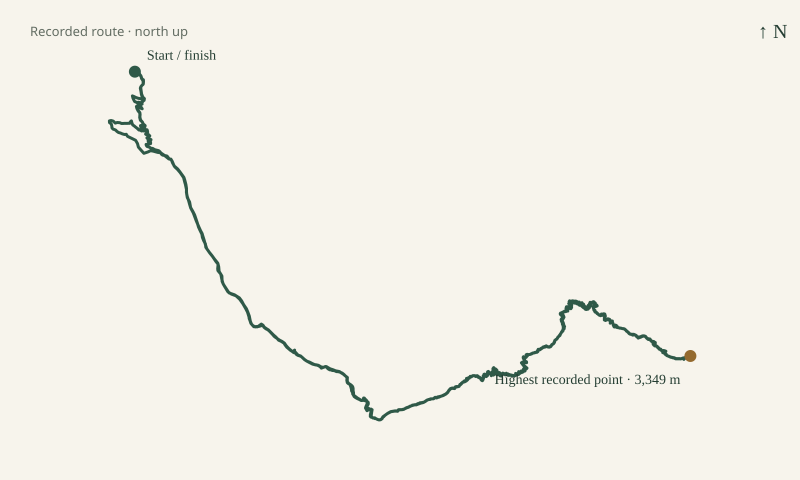
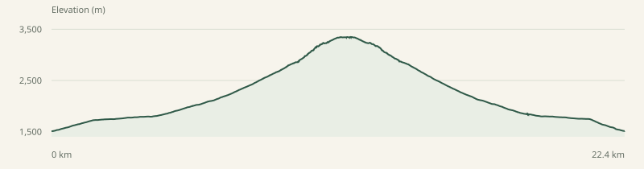

9 August 2026 · 22.4 km · ↑ 1,887 m


Loading the interactive map. The recorded route and elevation profile are shown above.
JavaScript is needed for the interactive map. The route outline and elevation profile remain available.